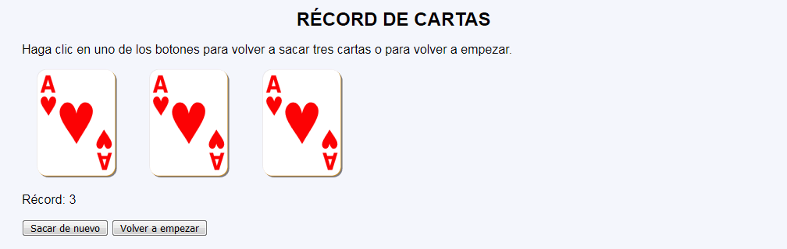
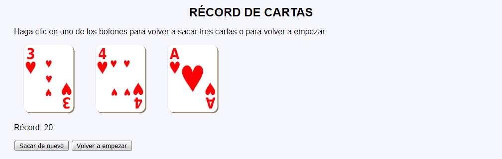

Récord de cartas - Comentarios
- El programa podrá tener dos páginas y utilizar sesiones:
- La primera página muestra tres cartas del 1 al 10 de corazones y la puntuación más alta obtenida:
- La primera vez que se abre la página se muestran tres ases.
- Al pulsar el botón "Sacar de nuevo" se muestran 3 nuevas cartas del 1 al 10 de corazones.
- Se muestra también la puntuación más alta obtenida hasta el momento (la puntuación es la suma de los valores de las cartas).
- Al pulsar el botón "Volver a empezar" se vuelven a mostrar tres ases y el récord vale de nuevo tres.
- La segunda página recoge el botón, modifica las variables de sesión y redirige a la primera página.
- La primera página muestra tres cartas del 1 al 10 de corazones y la puntuación más alta obtenida:
- Si se intenta acceder directamente a la segunda página sin pasar por la primera o si se envía a la segunda página información distinta a la esperada, se redirigirá a la primera página sin informar al usuario.
- No se debe cambiar el nombre del control incluido en las plantillas.
- Al actualizar la primera página, no se modificará el contenido.
- Capturas de pantalla de ejemplo:


